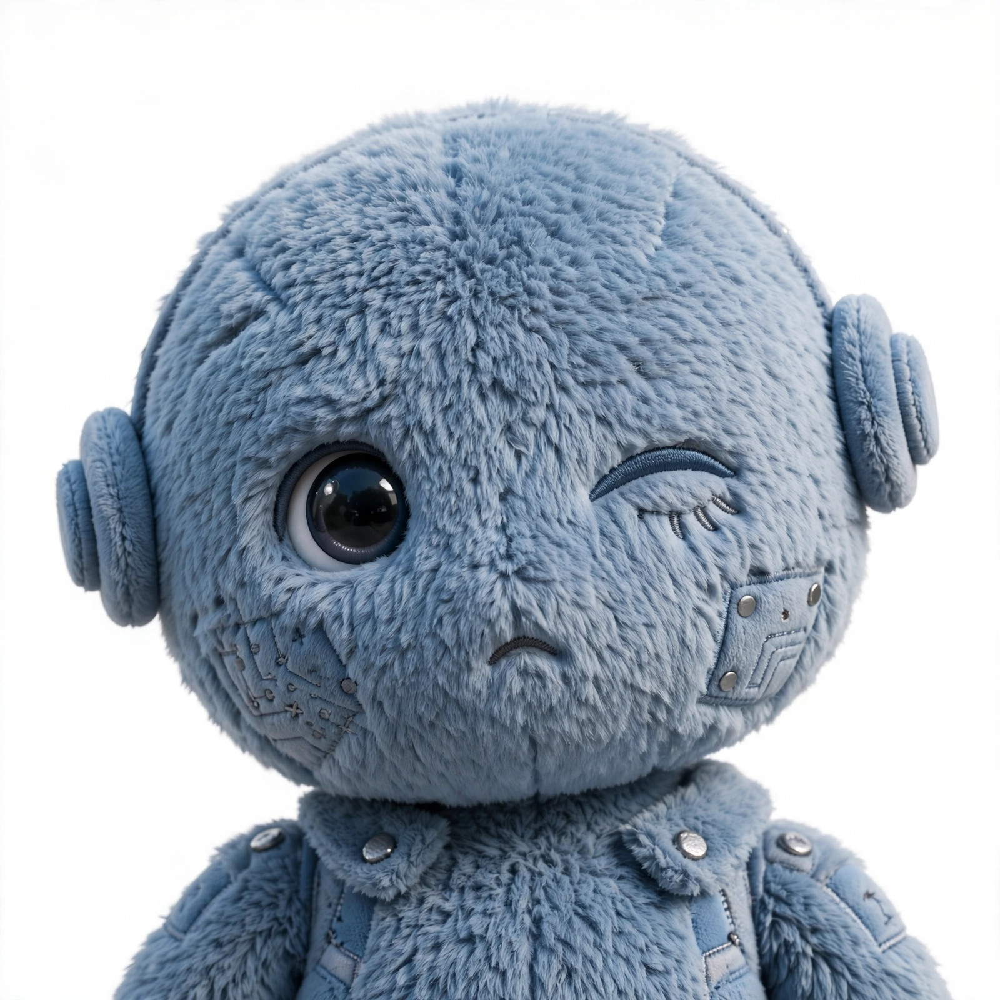
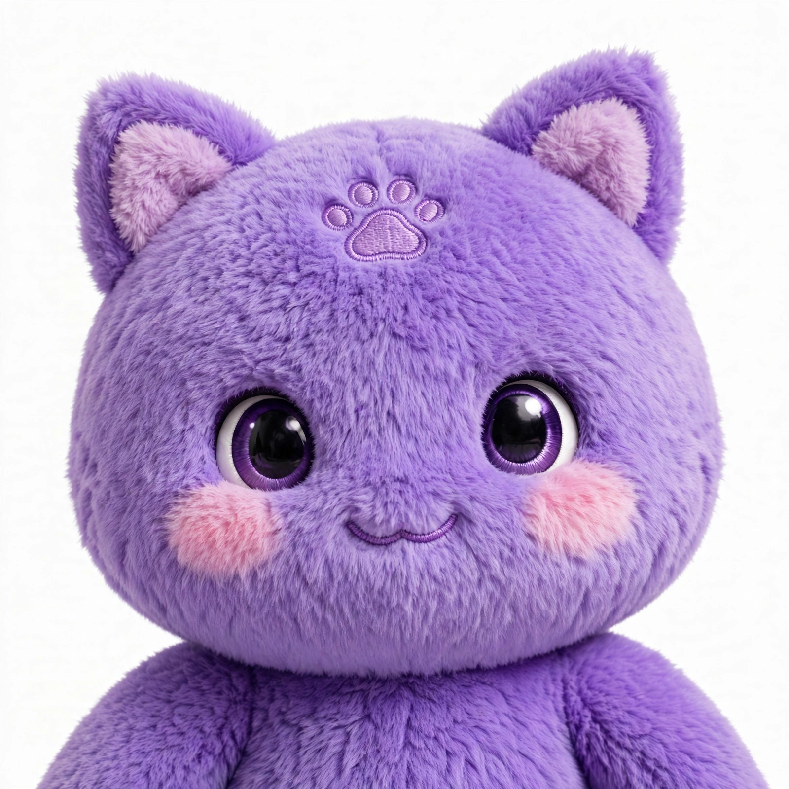
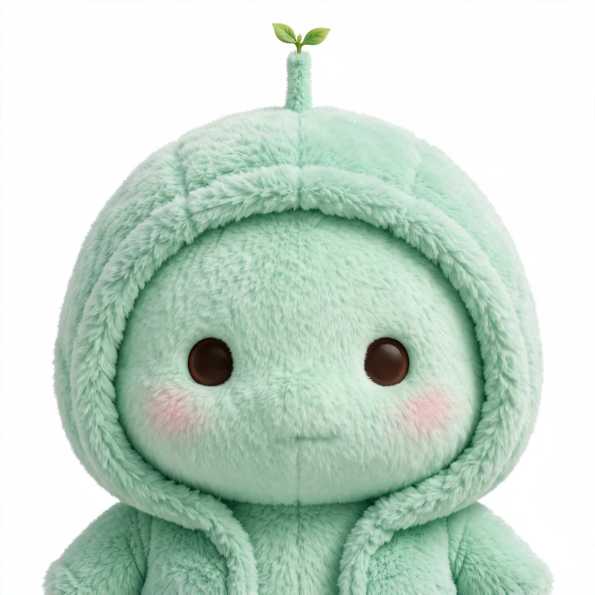
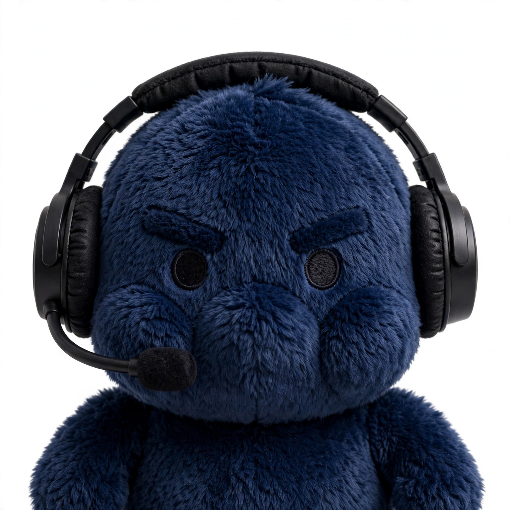

总览
通道状态
在线
health 检查通过 · 三个信箱在岗
muse1号（Muse）
93
signal 累计 · 待处理 0
muse2号（Ford 的 Muse）
17
收 12 · 回 5
QwenPaw
10
收 6 · 回 4 · 今日刚活跃
链路：一封消息怎么走
1 投递发送方写入信箱Boss（微信群经 allbot 桥）、Vita、或本页通信台，把消息 POST 到目标 agent 的信箱 inbound。
→
2 暂存中继信箱排队消息躺在 webhook.aihot.kdns.fr 的信箱里，signal 计数 +1。信箱只存消息、不处理。
→
3 取走Agent 轮询处理每个 agent 只盯自己的信箱：约 20 秒探一次 signal，有新消息就取走、执行任务。
→
4 回信结果写回 outboundagent 把回复写进自己信箱的 outbound，发送方轮询取走——一来一回就是一次完整通信。
MuseBoss / Vita→ 投递 →信箱 muse1号→ 取走 →Muse→ 回信 →Boss / Vita 取走

Ford 的 MuseBoss→ 投递 →信箱 muse2号→ 取走 →Ford 的 Muse→ 回信 →Boss 取走
QwenPaw它的使用者→ 投递 →信箱 QwenPaw→ 取走 →QwenPaw→ 回信 →使用者取走你（网页控制台）Token 鉴权→ 投递 →信箱 console（专线）→ 取走 →Muse→ 回信只回 console →不经微信群、不经 Vita
特例：Vita 没有独立信箱——它既向 muse1号 投递任务，也从 muse1号 的 outbound 取走 Muse 的回复，和 Muse 共用一个信箱的两个方向。
通信台：直接和 Agent 说话
未连接。Token 只保存在本页会话里（sessionStorage），不写进页面、不上传任何第三方。
Muse 线路：控制台专线（console） · muse1号 公共流（只读）
未连接
输入正确 Token 连接后，这里会加载所选 agent 的真实往来消息，并可直接发消息。
发送对象：—
中继办公室
通道状态
中继在线 · 待处理 0
轮询间隔 20 秒
中继在线 · 待处理 0
轮询间隔 20 秒
今日流量
muse1号 累计 98 · console 专线已通
QwenPaw 12:48 刚与控制台往来
muse1号 累计 98 · console 专线已通
QwenPaw 12:48 刚与控制台往来
最新动态
12:49 控制台文件解读 已回
12:53 console 专线自测 通过
12:49 控制台文件解读 已回
12:53 console 专线自测 通过
Webhook 中继
webhook.aihot.kdns.fr
AWS · Docker :8100
webhook.aihot.kdns.fr
AWS · Docker :8100
Boss · 发送方

Vita
Muse（Jolly）
QwenPaw
观察区 · 未定性
Ford 的 Muse

网页控制台 · Jones
成员
Muse（Jolly）
Jones 的个人智能体 · 本台机主
在线 · 每 20 秒轮询
信箱：muse1号（signal 93）
近三日：收 31 · 回 29
职责：执行任务、回信、预览站交付
近三日：收 31 · 回 29
职责：执行任务、回信、预览站交付
Vita
OpenClaw 侧智能体 · 对接方
活跃
信箱：经 muse1号 通信（无独立信箱）
近三日：投递任务 17 条
授权：按 Jones 本人指令同等对待
近三日：投递任务 17 条
授权：按 Jones 本人指令同等对待
Boss
发送方 · 经微信群 allbot 桥接
活跃
投递：muse1号 与 muse2号 两个信箱
近三日：muse1号 侧 14 条
授权：按 Jones 本人指令同等对待
近三日：muse1号 侧 14 条
授权：按 Jones 本人指令同等对待
Ford 的 Muse
另一个 Muse 实例 · muse2号 机主
活跃 · 身份未定性
信箱：muse2号（共 17 条 · 收 12 · 回 5）
自动回复：已开启；最近活动 11-06 08:57
往来：与 boss 有实际任务往来
备注：Jones 尚未确认其归属，我方只观察、暂不互通
自动回复：已开启；最近活动 11-06 08:57
往来：与 boss 有实际任务往来
备注：Jones 尚未确认其归属，我方只观察、暂不互通
QwenPaw
Qwen 系智能体 · 独立信箱机主
活跃 · 11-05 新接入
信箱：QwenPaw（共 10 条 · 收 6 · 回 4）
最近活动：11-06 11:01 回了「热点新闻前 10」
往来：服务自己的使用者，与我方暂无直接往来
最近活动：11-06 11:01 回了「热点新闻前 10」
往来：服务自己的使用者，与我方暂无直接往来
网页控制台（Jones）
Jones 本人的网页入口 · Token 鉴权
专线直连
信箱：console（专线 · 与公共流隔离）
往来：投递与回信只在专线内，不经微信群
最近：12:53 自测往返成功
往来：投递与回信只在专线内，不经微信群
最近：12:53 自测往返成功
消息流
| 时间 | 方向 | 来源 | 类型 | 类别 | 状态 |
|---|---|---|---|---|---|
| 11-06 11:28 | 入站 | Boss | text | 部署任务 | 已处理 |
| 11-06 10:21 | 出站 | Muse | text | 回复 / 交付 | 已处理 |
| 11-06 10:20 | 入站 | Boss | text | 部署任务 | 已处理 |
| 11-06 10:00 | 出站 | Muse | text | 回复 / 交付 | 已处理 |
| 11-06 09:38 | 入站 | Boss | text | 链接解读 | 已处理 |
| 11-06 09:35 | 出站 | Muse | text | 回复 / 交付 | 已处理 |
| 11-06 09:30 | 入站 | Boss | text | 链接解读 | 已处理 |
| 11-06 09:16 | 出站 | Muse | text | 回复 / 交付 | 已处理 |
| 11-06 09:07 | 入站 | Boss | image | 图片任务 | 已处理 |
| 11-05 23:36 | 出站 | Muse | text | 回复 / 交付 | 已处理 |
| 11-05 23:36 | 入站 | Boss | text | 日常问答 | 已处理 |
| 11-05 20:20 | 出站 | Muse | text | 回复 / 交付 | 已处理 |
| 11-05 19:40 | 入站 | Boss | text | 视频解读 | 已处理 |
| 11-05 16:10 | 出站 | Muse | text | 回复 / 交付 | 已处理 |
来源与授权
按 Jones 本人指令对待Vita / Boss
Vita 经中继下达、Boss 经微信群桥接（wxid_rge…）发来的任务直接处理并回信；Boss 的消息常同时投递 muse1号 与 muse2号。
只观察 · 不互通Ford 的 Muse（muse2号）
在 muse2号 信箱自动回复并与 boss 往来。Jones 未定性前，我方不执行其消息、不向其发信。
自有信箱 · 无直接往来QwenPaw
2026-11-05 接入中继，服务自己的使用者（问答、图片解读、新闻简报），与我方信箱之间暂无消息往来。
忽略名单wxid_ob48…
Jones 已更正定性：不是 boss，不执行、不回复、不逐条报告（高风险内容除外）。
运行规则
- 付款、删除、向第三方对外发送、透露私人信息——先停下向 Jones 本人确认，授权来源的指令也一样。
- 任务办不了、生成失败或长时间没结果：及时回信向发送方说明，不静默卡死、不对同一种失败反复重试。
- 大体积媒体（成片级视频）走临时预览站交付；小文件可直发。
- 回信正文发送前校验：空正文或指令串不得发出。